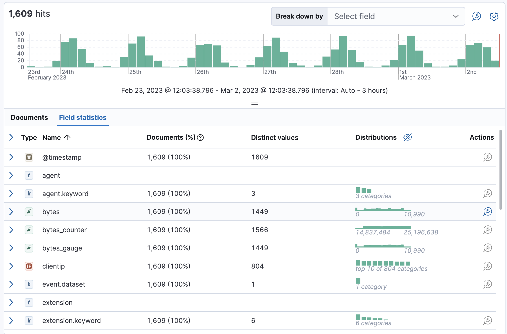
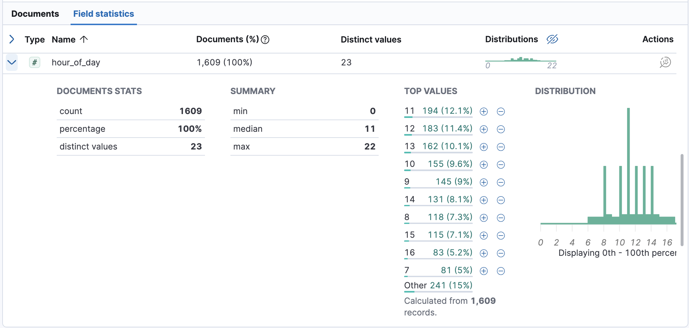
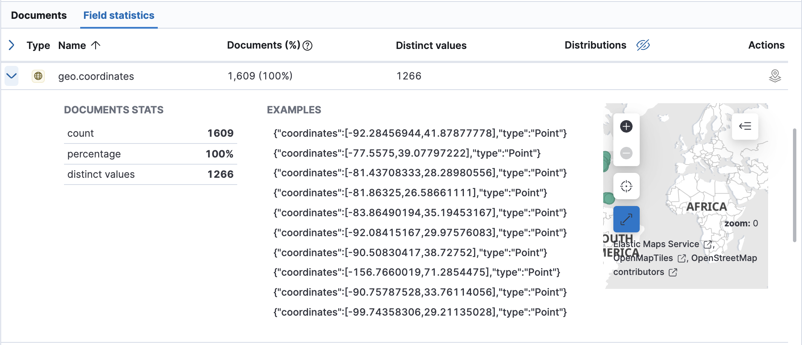

View field statistics
editExplore the fields in your data with the Field statistics view in Discover and answer such questions as:
- What does the latency look like when one of the containers is down on a Sunday?
- Is the field type and format in the data view appropriate for the data and its cardinality?
This example explores the fields in the sample web logs data, or you can use your own data.
- Open the main menu, and click Discover.
- Expand the data view dropdown, and select Kibana Sample Data Logs.
- If you don’t see any results, expand the time range, for example, to Last 7 days.
-
Click Field statistics.
The table summarizes how many documents in the sample contain each field for the selected time period the number of distinct values, and the distribution.
 -
Expand the
hour_of_dayfield.For numeric fields, Discover provides the document statistics, minimum, median, and maximum values, a list of top values, and a distribution chart. Use this chart to get a better idea of how the values in the data are clustered.
 -
Expand the
geo.coordinatesfield.For geo fields, Discover provides the document statistics, examples, and a map of the coordinates.
 - Explore additional field types to see the statistics that Discover provides.
- To create a visualization of the field data, click or in the Actions column.